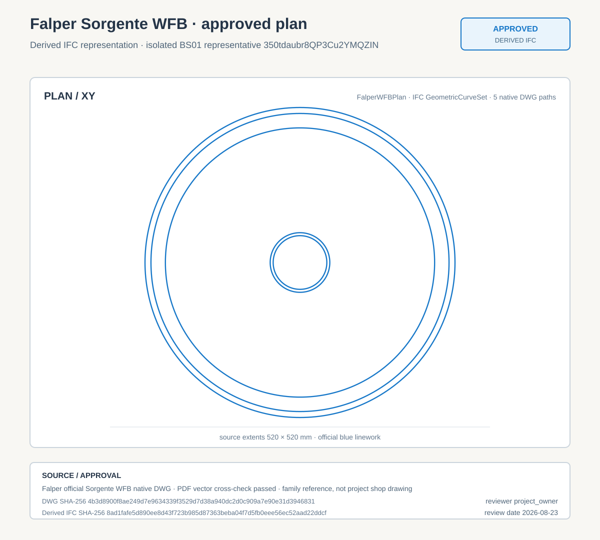
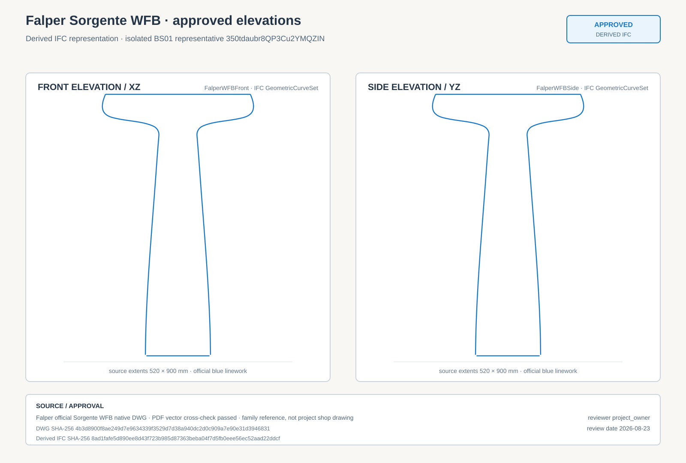

卫生平面图 · 局部审核

状态：已批准。蓝线来自 Falper 官方 WFB 原生 DWG；正式权威 IFC 字节未改动。
Bonsai 直接打开已批准的派生 IFC，激活 Sanitary Plan 与 EL-08-30-R16-NY 两个 IFC Drawing 正交相机，并执行 bpy.ops.bim.create_drawing。墙体、家具、材质和标注均来自实际项目上下文；Falper 由标准 Body/PLAN_VIEW 与 Body/ELEVATION_VIEW 选择官方 WFB DWG 几何。白色遮罩和蓝色只改变显示样式，不替换 Bonsai 输出的 Falper 路径。
旧橙色选中线和孤立 Body Workbench 图只保留为反例/诊断证据，不能证明 Falper 在含墙体、家具的实际项目 IFC Drawing 中正确显示。


正式 IFC 基线：7a50b87e8f48a7c2bfbaa9f1dabdfca7155fa684b2325c66aa1ae15c8ab0a25c